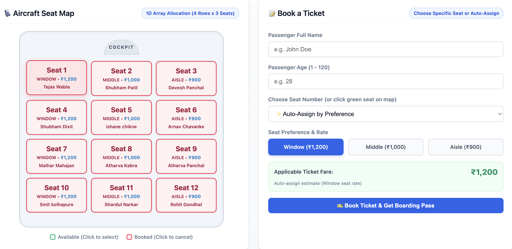

Department of Computer Engineering / Information Technology
Course: Data Structures and Algorithms Laboratory | Academic Year: 2026–2027
Academic Mini Project Report
Flight Booking and Seat Management System
An Algorithmic Reservation and Inventory Architecture Implemented Using Fundamental Data Structures (Doubly Linked Lists, FIFO Queues, LIFO Stacks, 1D Arrays, and Binary Search)
Sr. No.
Student Name
Roll Number / ID
Project Contribution / Assigned Role
1
Malhar Mahajan
25108B0029
Project Lead, Doubly Linked List & Web GUI Architecture
Binary Search Engine, Multi-Key Sorting & Testing Suite
1. Abstract
Modern airline passenger reservation systems necessitate low-latency, deterministic data handling for ticket reservations, seat category allocation, cancellations, and waiting list updates. This project presents the design and implementation of a robust Flight Booking and Seat Management System engineered in Python using purely native, foundational data structures without relying on high-level database engines or external third-party collection libraries. The system utilizes: (1) A Doubly Linked List with an O(1) prepend operation to store confirmed passengers and immediately display newest bookings at the top; (2) A FIFO Singly Linked Queue with front and rear pointers to manage fair passenger waitlisting and automated promotion upon seat cancellation; (3) A Fixed-Capacity LIFO Stack to record cancellations and provide multi-level undo functionality; (4) A 1D Array Representation for dynamic seat inventory tracking across Window (₹1,200), Middle (₹1,000), and Aisle (₹900) tiers; and (5) Optimized Binary Search (O(log N)) and Insertion/Bubble Sort routines for rapid passenger lookups by PNR, Name, and Age. Evaluated through both a terminal CLI and an interactive, responsive Web Dashboard running on Python's built-in HTTP server, the system successfully demonstrates complete transaction atomicity, real-time ticket generation, and zero data inconsistency under boundary constraints.
2. Introduction
2.1 Problem Statement
Commercial flight reservation processes encounter severe operational bottlenecks when processing high-frequency transactions involving seat selection, queue transitions, and last-minute cancellations. Standard enterprise implementations often introduce unnecessary overhead when modeling atomic, in-memory state changes. The primary challenge is to construct an in-memory passenger reservation and inventory control engine that satisfies strict algorithmic time and space complexity constraints:
Instantaneous (O(1)) priority addition and chronological head-placement of newly reserved tickets.
Reversible Last-In-First-Out (LIFO) transaction rollbacks for ticket cancellation undos.
Real-time seat inventory mapping with category-based fare computing.
2.2 Project Objectives
Pure Data Structure Design: Implement all core data storage components from scratch using foundational object-oriented pointer references and arrays.
Automated Queue Promotion: Automatically promote the front passenger in the waiting queue into the confirmed passenger list whenever an active seat is cancelled, immediately assigning the newly vacated seat number.
Seat Matrix & Dynamic Pricing: Segment an aircraft cabin into distinct seat classifications (Window @ ₹1,200, Middle @ ₹1,000, Aisle @ ₹900) and track real-time occupancy.
Fast Searching & Sorting: Allow ground crew and users to search passengers by unique Passenger Name Record (PNR) in O(log N) time, and sort passenger manifests dynamically by Age and Name.
Interactive User Interfaces: Provide an intuitive, modern Web Dashboard (HTML5/CSS3/JavaScript) and a comprehensive Command-Line Interface (CLI).
2.3 Scope and Significance
This project bridges theoretical computer science education with real-world software engineering. By mapping distinct real-world requirements to specific data structures, students gain practical insight into algorithmic efficiency, memory references, pointer manipulation, and GUI-backend integration.
Software: Windows 10/11, macOS, or Linux; Python 3.8 to 3.12 (Standard Library only; zero pip dependencies); Modern Web Browser (Chrome, Safari, Firefox, Edge).
3.2 System Architecture Diagram
3.3 Data Structure Mapping & Time/Space Complexity
Module / Feature
Chosen Data Structure
Primary Algorithmic Technique
Time Complexity
Space Complexity
Confirmed Passengers
Doubly Linked List (TicketList)
Head Prepend & Pointer Relinking
O(1) Insert
O(N)
Waiting List Overflow
Singly Linked Queue (Queue)
Head Dequeue & Tail Enqueue
O(1) Push/Pop
O(W)
Cancellation History & Undo
Fixed-Capacity Array Stack (Stack)
Top Pointer Increment / Decrement
O(1) Push/Pop
O(K)
Seat Inventory & Pricing
1D Array (SeatMap)
Direct Array Indexing seats[seat_no-1]
O(1) Lookup
O(1) (Capacity 12)
PNR Fast Lookup
Sorted Array (BinarySearch)
Divide and Conquer Search
O(log N)
O(1) auxiliary
Manifest Display Sorting
In-place Bubble / Insertion Sort
Pairwise comparison and shift
O(N²) worst, O(N) best
O(1) auxiliary
4. Implementation & Module Details
4.1 Confirmed Passenger Storage via Doubly Linked List (confirmed_tickets.py)
Standard lists or dynamic arrays require O(N) element shifting when prepending elements. To ensure that newly booked passengers appear immediately at the top of the confirmed manifest in O(1) time, a Doubly Linked List is employed. Each TicketNode maintains references to the passenger record, prev node, and next node.
def prepend(self, record):
"""Inserts newly booked passenger at the head of the list in O(1) time."""
new_node = TicketNode(record)
if self.is_empty():
self.head = self.tail = new_node
else:
new_node.next = self.head
self.head.prev = new_node
self.head = new_node
self._size += 1
4.2 Fair Waiting List via Singly Linked Queue (waiting_queue.py)
Overbooked passengers are appended to a FIFO Queue. Separate head_node and tail_node pointers ensure O(1) enqueue and dequeue operations. When any confirmed seat is cancelled, the front passenger in the queue is automatically dequeued, granted confirmed status, and assigned the vacated seat.
4.3 Cancellation History and Undo via Array Stack (cancellation_stack.py)
A fixed-size array stack implements LIFO rollback semantics. Whenever a ticket is cancelled, its snapshot is pushed onto the stack. Invoking the "Undo Cancellation" routine pops the top record, validates seat availability, and restores the passenger to active confirmed status.
New passenger displays at Row #1 in manifest (O(1) prepend).
PASS
TC-03
Flight Capacity Saturation
13th passenger booking attempt
Prompt waitlist; passenger queued as WAITLISTED (WL-1).
PASS
TC-04
Auto Waitlist Promotion
Cancel confirmed ticket (Seat 3)
Seat 3 freed; front waitlisted passenger promoted and allocated Seat 3.
PASS
TC-05
Undo Cancellation
Invoke "Undo Cancellation"
Most recently cancelled ticket popped from stack and re-confirmed.
PASS
TC-06
Binary Search on PNR
Search PNR "AI-1007"
Record located in ≤ 4 comparisons using O(log N) Binary Search.
PASS
TC-07
Manifest Sorting
Sort by Age ascending
Manifest displayed in strictly non-decreasing order of passenger age.
PASS
5.2 Generated Boarding Pass Sample
================================================================================
AIRWAYS BOARDING PASS
================================================================================
PASSENGER NAME : Malhar Mahajan PNR NO : AI-1007
AGE : 20 Years SEAT NO : 07 (Window)
FLIGHT : AI-204 (Mumbai to Delhi) STATUS : CONFIRMED
BOARDING TIME : 09:30 AM GATE : G-04
FARE PAID : INR 1,200 CLASS : Economy Standard
================================================================================
Please be at the boarding gate at least 45 minutes prior to departure.
================================================================================
5.3 Screenshot Walkthrough Guides

Figure 5.1: Web Dashboard showing interactive 12-seat matrix, dynamic fares, and booking form.
The Flight Booking and Seat Management System successfully demonstrates that foundational computer science data structures (Doubly Linked Lists, Singly Linked Queues, Array Stacks, and Direct-Index Arrays) can form a robust, high-performance airline reservation engine without relying on opaque databases. The application guarantees fair waitlist management, O(1) recent booking access, reversible cancellations, and O(log N) search lookups.
6.2 Future Scope
Multi-Sector Flight Routing: Extend the architecture to handle connecting flights using Directed Acyclic Graphs (DAG).
Persistent Database Backing: Implement serialized B-Trees or lightweight disk persistence to retain booking state across system restarts.